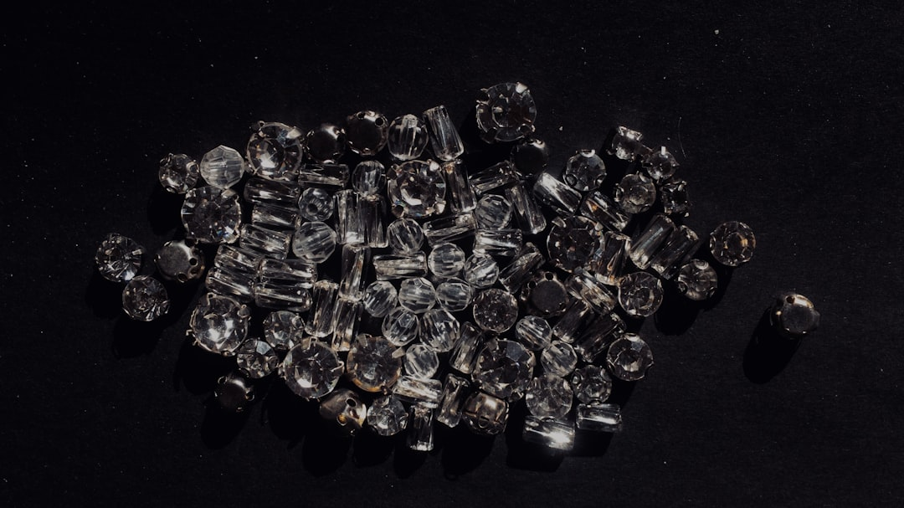

中 핵심광물 통제, '가격'에서 '거래처'로…선별 봉쇄 설계도 해독

중국은 2023년 8월 갈륨·게르마늄 수출허가제를 시행한 이후 2024년 말 일본향 갈륨 수출을 4개월 만에 재개했지만 게르마늄은 여전히 봉쇄 중이다. 이는 단순한 전면 금수가 아니라 국가별·기업별로 수출허가를 선택적으로 부여하는 '거래처 지정형 통제'로 진화한 것이다. 중국 상무부는 수출허가 심사 기준을 공개하지 않아 예측 불가능성 자체가 통제 수단이 되고 있다.
게르마늄 국제 가격은 중국 통제 이전(2023년 초) 대비 약 3배 수준을 유지 중이다. 갈륨의 경우 일본 재수출 재개 후 소폭 하락했지만, 여전히 2023년 이전 대비 2.2~2.5배 수준이다. 한국의 연간 게르마늄 수입액은 약 400억 원 규모로 추정되며, 이 중 85% 이상이 중국산이었다.
중국 상무부가 2025년 7월 1일 시행한 이중용도 품목 관리 공고 제26호는 전략 광물의 '최종 사용자·최종 용도' 확인 의무를 수출허가 조건으로 명시했다. 이는 허가를 받아도 사용처가 변경되면 재허가를 받아야 하는 구조로, 소재 재판매·재수출을 원천 차단하는 설계다.
고려아연의 갈륨 연 15.5t 생산(2028년 예정)과 게르마늄 국내 회수 프로젝트는 이 통제 구조에서 현실적 대안이지만, 현재 한국의 연간 갈륨 수요(추정 40~50t)와 게르마늄 수요(추정 30t 이상)를 국내 생산으로 충당하기까지 최소 5~7년 이상이 필요하다. 그 공백 기간의 조달 전략이 지금 당장 필요하다.
중국의 통제 설계가 '가격 충격'에서 '거래처 지정'으로 진화했다는 것은 한국이 단순히 돈을 더 주고 살 수 없는 상황이 될 수 있다는 의미다. 중국이 특정 기업·국가를 허가 대상에서 제외하면 시장 가격과 무관하게 소재 자체를 구할 수 없다. 이는 반도체 팹의 생산 라인 중단이라는 최악의 시나리오를 현실화하는 경로다.
공급자 시각에서 이 변화의 핵심은 '재고 전략의 한계'다. 종전에는 가격이 올라도 재고를 충분히 쌓아두면 6~12개월은 버틸 수 있었다. 그러나 최종 사용자·용도 확인 의무가 강화되면서 제3국 경유 재고 축적(우회 조달)이 허가 위반 위험에 노출된다. 합법적 재고 확보 경로가 막히는 것이다.
고려아연은 국내 유일의 갈륨·게르마늄 자체 생산 가능 기업으로 통제가 심화될수록 희소성이 커진다. 2028년 갈륨 양산이 본격화되면 국내 반도체·화합물 반도체 기업들의 장기 공급계약 체결 대상 1순위가 된다.
일본은 이번 갈륨 재수출 재개의 직접 수혜국이다. 재팬알루미늄·덴카 등 일본 갈륨 수입·정제 기업들은 중국 허가를 재확보하면서 한국·유럽 대비 원가 경쟁력을 일시적으로 회복했다. 한국 기업들이 일본 갈륨 정제사를 통한 우회 조달을 늘릴 가능성이 있다.
한국 화합물 반도체(GaN·GaAs) 기업들이 가장 직접적 타격권이다. 갈륨 기반 전력반도체·RF칩 제조사들은 연간 수입량 기준으로 중국산 비율이 80% 이상이며, 대체 소싱 계약을 갖추지 못한 기업은 허가 지연 시 생산 중단 위기에 직면한다.
게르마늄을 광섬유·적외선 광학 소자에 사용하는 기업들도 타격이 지속된다. 국내 광통신 소재 기업들은 게르마늄 가격이 3배 수준을 유지하면서 원가 부담이 누적되고 있으며, 제품 가격에 전가하기 어려운 구조라 마진이 장기 압박을 받고 있다.
소재 구매담당자라면 지금 당장 갈륨·게르마늄 공급사의 '중국 수출허가 보유 여부'와 '최종 사용자 증명서(EUC) 제출 이력'을 확인해야 한다. 허가 없이 거래하는 중간상을 통해 조달하면 중국 제26호 공고 위반 리스크가 한국 기업에도 전이될 수 있다.
투자자라면 고려아연 갈륨 생산 프로젝트의 2025~2027년 공정 진척률을 분기별로 체크해야 한다. 예정대로 2028년 양산이 시작되면 국내 화합물 반도체 기업들의 원재료 조달 리스크가 구조적으로 낮아지는 시점이 발생한다.
중단기적으로는 캐나다(5N Plus)·독일(PPM Pure Metals)·러시아 우회 불가 시 호주 갈륨 소재사를 통한 다변화 포트폴리오 구성이 필요하다. 단일 국가 의존도를 50% 이하로 낮추는 것을 내부 조달 정책 기준으로 설정해야 한다.
실제 조달 현장에서는 — 중국 갈륨 공급사가 허가 심사 중이라는 이유로 납기를 6~8주씩 미루는 패턴이 2023년 이후 반복되고 있다. 이 지연이 '심사 중'인지 '사실상 거부'인지 확인하는 데만 4주가 걸린다. 계약서에 허가 지연 시 페널티 조항과 함께 제3국 대체 조달 트리거 조건을 명시해두면 이 시간을 절반으로 줄일 수 있다.
이 포스팅은 쿠팡 파트너스 활동의 일환으로 수수료를 제공받습니다.